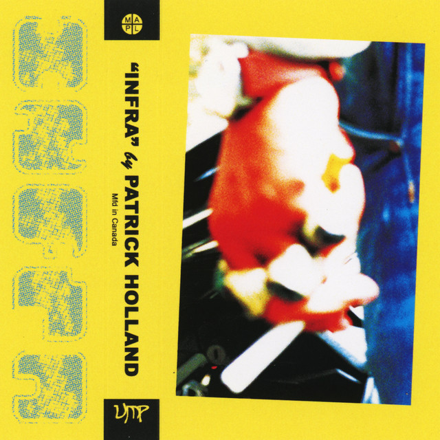

Patrick Holland - Infra



Información del álbum facilitada por discogs.com:
Fecha de lanzamiento: 2000
Géneros: Electronic, Rock, Latin, Pop
Estilos: Synth-pop, Disco
Tracklist:
-
Sunshine Reggae ( feat. John Guldberg & Tim Stahl) 4:16
-
Endicott ( feat. August Darnell) 4:28
-
Cruel Summer ( feat. Keren Woodward & Sarah Dallin & Siobhan Fahey & Steve Jolley & Tony Swain) 3:30
-
Reggae Nights ( feat. Amir Bayyan & La Toya Jackson) 5:22
-
Walking On Sunshine ( feat. Kimberley Rew) 3:58
-
Holiday Rap ( feat. Bruce Welch & Curtis Hudson & Lisa Stevens) 4:27
-
Rhythm Of The Night ( feat. Diane Warren) 3:55
-
Carbonara ( feat. Reinhold Heil) 4:18
-
Don’t Turn Around ( feat. Albert Hammond & Diane Warren) 3:38
-
Exotic & Erotic ( feat. Sandy Marton) 4:23
. Rootsie & Boopsie (Medley) ( feat. C.W. Peters & Gino Zandonà & Mario Natale & Roberto Turatti & Silvio Melloni) 6:05
-
A Baylar Calypso ( feat. Elli Medeiros & Ramuntcho Matta) 4:25
-
Pass The Dutchie ( feat. Fitzroy Simpson & Jackie Mittoo & Lloyd Ferguson) 3:25
-
I Won’t Let The Sun Go Down On Me ( feat. Nik Kershaw) 3:17
-
Hot Hot Hot ( feat. Alphonsus Cassell) 3:35
-
Vacances J’Oublie Tout ( feat. Patrick Bourges & Pierre Zito) 5:07
-
L’Estate Sta Finendo ( feat. Carmelo La Bionda & Stefano Righi & Stefano Rota) 3:48
-
Paradise ( feat. Joel Diamond & L. Russell Brown) 4:13